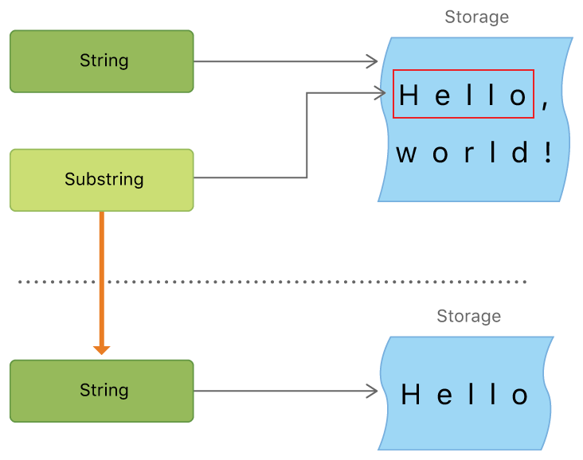

How does String substring work in Swift
I've been updating some of my old code and answers with Swift 3 but when I got to Swift Strings and Indexing with substrings things got confusing.
Specifically I was trying the following:
let str = "Hello, playground" let prefixRange = str.startIndex..<str.startIndex.advancedBy(5) let prefix = str.substringWithRange(prefixRange)
where the second line was giving me the following error
Value of type 'String' has no member 'substringWithRange'
I see that String does have the following methods now:
str.substring(to: String.Index) str.substring(from: String.Index) str.substring(with: Range<String.Index>)
These were really confusing me at first so I started playing around index and range. This is a followup question and answer for substring. I am adding an answer below to show how they are used.
Answer

All of the following examples use
var str = "Hello, playground"
Swift 4
Strings got a pretty big overhaul in Swift 4. When you get some substring from
a String now, you get a Substring type back rather than a String. Why is
this? Strings are value types in Swift. That means if you use one String to
make a new one, then it has to be copied over. This is good for stability (no
one else is going to change it without your knowledge) but bad for efficiency.
A Substring, on the other hand, is a reference back to the original String from which it came. Here is an image from the documentation illustrating that.

No copying is needed so it is much more efficient to use. However, imagine you got a ten character Substring from a million character String. Because the Substring is referencing the String, the system would have to hold on to the entire String for as long as the Substring is around. Thus, whenever you are done manipulating your Substring, convert it to a String.
let myString = String(mySubstring)
This will copy just the substring over and the memory holding old String can be reclaimed. Substrings (as a type) are meant to be short lived.
Another big improvement in Swift 4 is that Strings are Collections (again). That means that whatever you can do to a Collection, you can do to a String (use subscripts, iterate over the characters, filter, etc).
The following examples show how to get a substring in Swift.
Getting substrings
You can get a substring from a string by using subscripts or a number of other
methods (for example, prefix, suffix, split). You still need to use
String.Index and not an Int index for the range, though. (See my other
answer if you need help with that.)
Beginning of a string
You can use a subscript (note the Swift 4 one-sided range):
let index = str.index(str.startIndex, offsetBy: 5) let mySubstring = str[..<index] // Hello
or prefix:
let index = str.index(str.startIndex, offsetBy: 5) let mySubstring = str.prefix(upTo: index) // Hello
or even easier:
let mySubstring = str.prefix(5) // Hello
End of a string
Using subscripts:
let index = str.index(str.endIndex, offsetBy: -10) let mySubstring = str[index...] // playground
or suffix:
let index = str.index(str.endIndex, offsetBy: -10) let mySubstring = str.suffix(from: index) // playground
or even easier:
let mySubstring = str.suffix(10) // playground
Note that when using the suffix(from: index) I had to count back from the
end by using -10. That is not necessary when just using suffix(x), which
just takes the last x characters of a String.
Range in a string
Again we simply use subscripts here.
let start = str.index(str.startIndex, offsetBy: 7) let end = str.index(str.endIndex, offsetBy: -6) let range = start..<end let mySubstring = str[range] // play
Converting Substring to String
Don't forget, when you are ready to save your substring, you should convert it
to a String so that the old string's memory can be cleaned up.
let myString = String(mySubstring)
Using an Int index extension?
I'm hesitant to use an Int based index extension after reading the article
Strings in Swift 3 by Airspeed Velocity and Ole Begemann. Although in Swift
4, Strings are collections, the Swift team purposely hasn't used Int
indexes. It is still String.Index. This has to do with Swift Characters
being composed of varying numbers of Unicode codepoints. The actual index has
to be uniquely calculated for every string.
I have to say, I hope the Swift team finds a way to abstract away
String.Index in the future. But until then, I am choosing to use their API.
It helps me to remember that String manipulations are not just simple Int
index lookups.
Suggest
I'm really frustrated at Swift's String access model: everything has to be an
Index. All I want is to access the i-th character of the string using Int,
not the clumsy index and advancing (which happens to change with every major
release). So I made an extension to String:
extension String { func index(from: Int) -> Index { return self.index(startIndex, offsetBy: from) } func substring(from: Int) -> String { let fromIndex = index(from: from) return String(self[fromIndex...]) } func substring(to: Int) -> String { let toIndex = index(from: to) return String(self[..<toIndex]) } func substring(with r: Range<Int>) -> String { let startIndex = index(from: r.lowerBound) let endIndex = index(from: r.upperBound) return String(self[startIndex..<endIndex]) } } let str = "Hello, playground" print(str.substring(from: 7)) // playground print(str.substring(to: 5)) // Hello print(str.substring(with: 7..<11)) // play